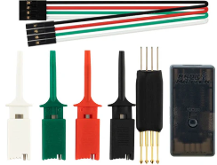

Uppdatera mjukvara i sändare med EdgeTX, ELRS & MultiModule - Tex Radiomaster
Detta är öppen mjukvara så det är bara att leta på nätet.Mjukvaran består av många delar
Mycket kort förklarat kan man säga att mjukvaran består av 3 (4 om man har en extern radio modul också).
- EdgeTX - Programmet du ser i sändaren
- ELRS - ExpressLRS är ett radioprotokoll som körs i sändarnas interna eller externa radiomodul. Mjukvara finns även till mottagarna.
- MM - MultiModule eller 4-in-1 modul. Är många olika (valbara) radioprotokoll som körs i sändaren interna eller externa radiomodul.
- Filsystem - I filsystemet finns det bl.a. filer till EdgeTX men även LUA script till ELRS och MM.
Utöver detta kan du behöva leta upp USB drivrutin till datorn om sändare och programmerings modul för mottagare inte hittas av din dator.
- Radiomaster TX16S och Windows 64-bit sök "VCP_V1.5.0_Setup_W7_x64_64bits.zip" och "STMicroelectronics".
Några bra ingångar till den öppna världen
- Färdigbyggda firmware med EdgeTX finns här. (Tänk på att uppdatera filer i filsystemtet också)
EdgeTX Firmware (Öppnas i ett nytt fönster) - För att underhålla filsystemet och uppdatering finns ett bra verktyg här.
EdgeTX Companion programmet (Öppnas i ett nytt fönster) - Färdigbyggd firmware till både sändarmoduler och mottagare för ExpressLRS hanteras av detta verktyg. (Även här behöver du uppdatera filer i filsystemet)
ExpressLRS Configurator (Öppnas i ett nytt fönster) - Färdigbyggd firmware till mulit module sändarmoduler finns här. (Även här behöver du uppdatera filer i filsystemet)
MM Firmware (Öppnas i ett nytt fönster)
Mottagare
För att kunna uppdatera mjukvaran i en mottagaren behöver du en "RadioMaster ExpressLRS USB UART Flasher V2" heter även "Radiomaster Usart tool" eller motsvarande från annan tillverkare. Mjukvaram flash'ar du med "ExpressLRS configurator" (samma program som till sändarmodulerna).
Hur du ansluter "Flasher" till mottagaren beror på vilken mottager det är. Har du ingen "Flasher" går det ofta att uppdatera mottagaren över WIFI (om det finns tillräckligt med minne i mottagare).
ExpressLRS uppdatera mottagare (Öppnas i ett nytt fönster)
Övrigt
- Här hittar du många fina ikoner till sina modeller.
Skyraccoon (Öppnas i ett nytt fönster)